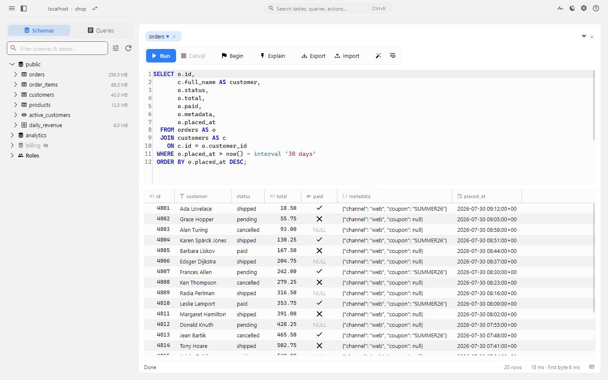
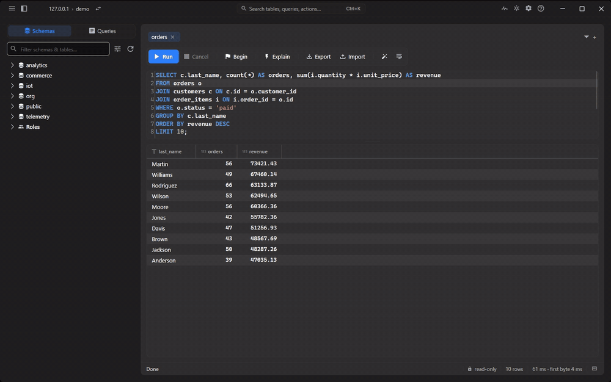
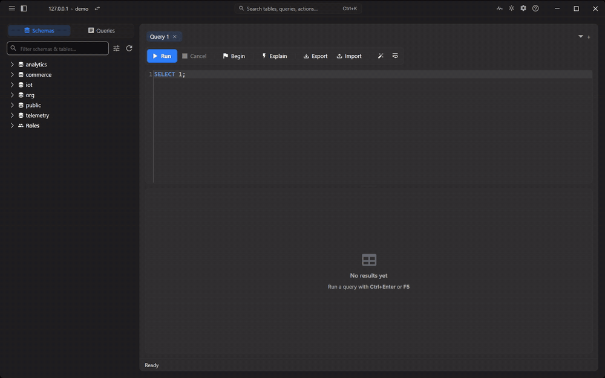
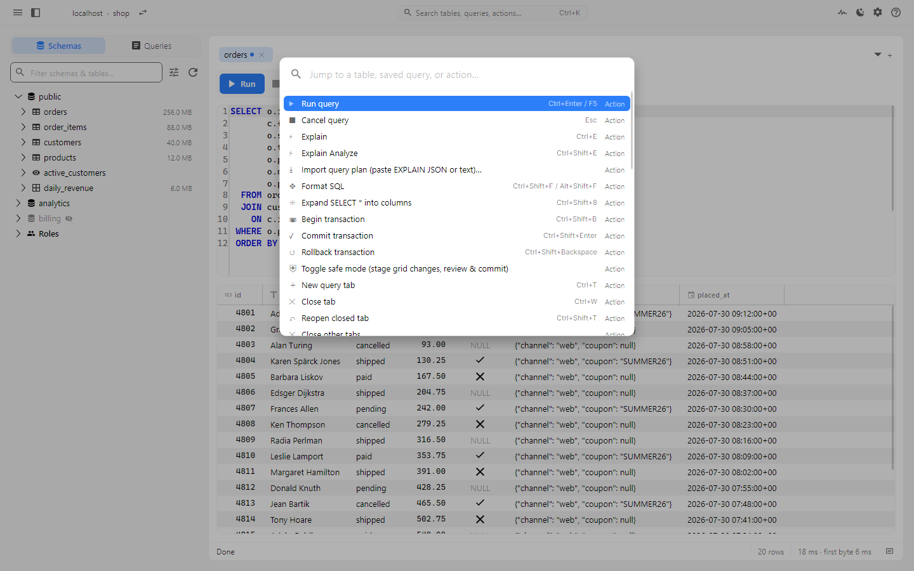
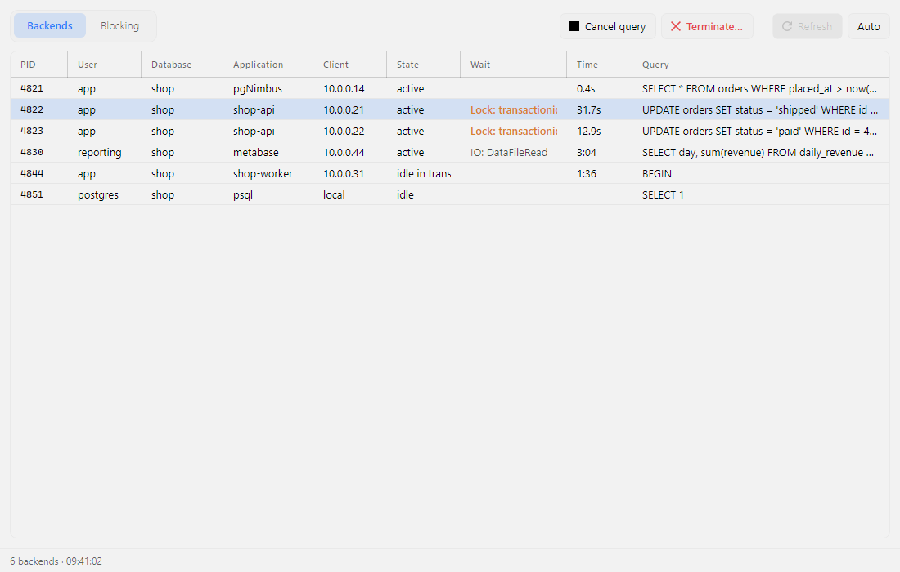

It talks to your database and nothing else: no telemetry, no account, no cloud. On screen in about 0.2 s, with results streaming while the query runs. Built with .NET 10 + Avalonia. MIT licensed.
or winget install pgNimbus --source msstore

The gap in the Postgres client market: truly fast + open source + modern UI. pgAdmin and DBeaver are heavy; TablePlus is closed and paid; HeidiSQL is dated and MySQL-first.
A NativeAOT binary, not an Electron shell: on screen in about 0.2 s. Startup, memory, and query-engine numbers are measured on every release.
Deep pg_catalog introspection, graphical EXPLAIN, FK-aware JOIN completion, roles and permissions, LISTEN/NOTIFY, server activity. Never the lowest-common-denominator dialect.
A Ctrl+K command palette that fuzzy-jumps to any table, query, or action; run, cancel, and navigate without touching the mouse. F1 shows every binding.
Zero telemetry: no analytics, no automatic crash reports, no update pings. Passwords are encrypted by the OS (DPAPI, Keychain, Secret Service). MIT-licensed, so you can verify it, not trust it. Privacy details.
Three months from the first commit to 1.0, with the benchmark run on every release along the way.
Cold start to first frame, completion that predicts the next move, and the tools around the query.
JOIN ranks related tables and writes the whole ON condition



pg_stat_activity and a lock tree: cancel or terminate a runaway backend in one clickA minimalist shell over a serious engine. Secondary actions live in the palette, not on a toolbar.
ON condition in one accept.WHERE comes back as chips.text or jsonb value, pretty-printed or as a tree.COPY. Export writes every row, not just the page on screen. Copy results as CSV, JSON, Markdown or INSERTs.Every tagged release runs the benchmark suite: startup to first frame, memory at first frame, connect and round-trip latency, time to first row batch, and full-stream throughput of a 100,000-row query.
Windows is the primary target; macOS and Linux builds ship as early betas.
The Microsoft Store build is signed by the Store: no SmartScreen warnings, and updates arrive on their own.
Microsoft Storewinget install pgNimbus --source msstore
Prefer a plain installer? Grab the per-user MSI from Releases (unsigned, so SmartScreen warns once).
Apple Silicon .dmg (macOS 12 or later) from GitHub Releases. Drag pgNimbus to Applications, then right-click it and choose Open the first time:
Right-click → Open → Open
The build is ad-hoc signed, not notarized, so macOS asks once. Until notarized builds ship, an update can leave saved passwords unreadable, and deleting the old pgNimbus items in Keychain Access fixes it. Details in the installation guide.
x64 and arm64 from GitHub Releases. The AppImage runs on any distro. Make it executable and launch it:
chmod +x pgNimbus-*.AppImage
Debian/Ubuntu .deb and a plain .tar.gz are on the same Releases page.